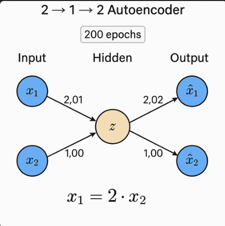

Everything about Autoencoders: From Linear Algebra to its Multimodal and Cross-modal Generative Capabilities
Motivation
My journey into generative models began with what seemed like an overwhelming field. However, my academic coursework in probability theory, Deep Learning, and Multimodal Data Processing provided the perfect foundation. Through this cumulative knowledge, I discovered that autoencoders offered an accessible entry point into understanding and working with Generative Multimodal models. I tried to build every concept from scratch, and you can watch this video for deeper insights into my research journey. It combines all my learning into a single comprehensive overview. Thanks to my Multimodal Data Processing course project for rekindling my passion for sharing knowledge online!
Historical Perspective
Autoencoders trace back to early neural network research in the 1980s. Variants like denoising and variational autoencoders emerged after 2010, enabling applications in image and multimodal learning. Recent advances in cross-modal generation build on these foundations.
Introduction
Autoencoders are a type of artificial neural network used for unsupervised learning. Their primary goal is to learn efficient representations of input data, typically for dimensionality reduction or noise removal. The architecture consists of an encoder that compresses the input, a bottleneck that stores the compressed knowledge, and a decoder that reconstructs the original data from this compressed form.
All code implementations discussed in this blog can be found in this Kaggle notebook.
Basic architecture of an autoencoder showing encoder, bottleneck, and decoder components
In this blog, we'll explore autoencoders from their mathematical foundations to advanced applications in multimodal learning. We'll also implement interactive visualizations to help you understand how autoencoders work.
Autoencoder vs U-Net: Understanding the Differences
While both architectures use encoder-decoder structures, they serve different purposes and have key differences:
| Feature | Autoencoder | U-Net |
|---|---|---|
| Primary Purpose | Unsupervised learning, dimensionality reduction, feature learning | Supervised segmentation, dense prediction tasks |
| Architecture | Symmetric encoder-decoder with bottleneck | Encoder-decoder with skip connections between corresponding layers |
| Information Flow | All information passes through bottleneck | Features can bypass bottleneck through skip connections |
| Output Size | Same as input (reconstruction) | Can be different from input (segmentation map) |
| Training | Self-supervised (input = target) | Supervised (requires labeled data) |
Autoencoder Architecture

Basic architecture of an autoencoder showing the encoding and decoding process
Mathematical Foundation
An autoencoder is defined by two main components: an encoder function that transforms the input data, and a decoder function that recreates the input data from the encoded representation.
Formally, for input space $$X$$ and encoded space $$Z$$, we define:
The training objective is to minimize the reconstruction error:
Surprisingly, for linear autoencoders (using only linear activations), the optimal solution is equivalent to Principal Component Analysis (PCA). This mathematical connection is well-explained in these lecture notes from IIT Madras's Deep Learning course and rigorously proven in this paper by Plaut (2018). The linear autoencoder learns to project data onto the principal subspace, just like PCA.
💡 For practical implementation of linear autoencoders and their equivalence to PCA, check Appendix 1 of the companion notebook.
Linear Autoencoder Structure
Principal Component Analysis (PCA)
Linear autoencoder loss function, which under optimal conditions yields PCA solution
BONUS: Recirculation Algorithm
You may skip this part.
It is very rare to find something related to it in mainstream machine learning community. The Recirculation Algorithm is an alternative to backpropagation for training neural networks, particularly autoencoders. It was introduced by Geoffrey Hinton and James McClelland in 1987 as a more biologically plausible learning mechanism. (MDPI)
Key Reference
-
Hinton, G.E., & McClelland, J.L. (1987).
Learning Representations by Recirculation.
In Proceedings of the Neural Information Processing Systems, Denver, CO, USA. MIT Press: Cambridge, MA, USA.
Link to reference
In this foundational paper, Hinton and McClelland propose the recirculation algorithm as a method for training neural networks without the need for explicit error backpropagation. Instead, the network adjusts its weights based on the difference between the input and the reconstructed output, allowing for local learning rules that are more aligned with biological neural processes.
Overview of the Recirculation Algorithm
The recirculation algorithm operates in two main phases:
- Forward Phase: The input data is passed through the network to produce an output.
- Backward (Recirculation) Phase: The output is then fed back into the network as input, and the network processes this "recirculated" data to produce a reconstruction.
The weights are updated based on the difference between the original input and the reconstruction, using local learning rules. This approach allows the network to learn representations by minimizing the discrepancy between the input and its reconstruction without relying on global error signals. (PubMed)
Further Reading
- Buscema, P.M. Recirculation Neural Networks. Link to paper
- Baldi, P., & Sadowski, P. (2018). Learning in the Machine: Recirculation is Random Backpropagation. Link to article
These works delve into the theoretical underpinnings of the recirculation algorithm and its relationship to other learning methods, offering valuable insights into alternative approaches to training neural networks.
Forward Pass:
\[ h = \sigma(W_1 x) \] \[ y = \sigma(W_2 h) \]where \(\sigma\) is the sigmoid activation function
Recirculation:
\[ h_{rec} = \sigma(W_2^T y) \]where \(W_2^T\) is the transpose of the decoder weights
Weight Update:
\[ \Delta W_1 = \eta (h_{rec} - h) x^T \]where \(\eta\) is the learning rate
Key Properties:
- Local Learning: Updates only use information available at each synapse
- Biological Plausibility: No separate error backpropagation channel needed
- Hardware Efficiency: Well-suited for neuromorphic computing systems
Recirculation Algorithm Visualization
Visual representation of the recirculation algorithm showing forward pass and backward recirculation
Recirculation Algorithm for 2→1→2 Autoencoder
Input Data
Weights
Reconstruction
Food for Thought: Voice Interpolation
Think about this—what if we could map the voices of two famous singers, like Arijit Singh and Atif Aslam, and then find a smooth path from one voice to the other? Kind of like moving a slider from one style to the next. That would be amazing, right?
Now take it a step further—what if you could see how close your voice is to your favorite singer's? Just like with face filters where you can see how your face compares to someone else's, we could do something similar with voice. You could actually learn how your voice is different, and maybe even change it to sound more like theirs.
The idea sounds fun—and the possibilities are endless!
Types of Autoencoders
There are several variations of autoencoders, each with specific applications:
Vanilla Autoencoder
The basic autoencoder architecture consists of an encoder and decoder with fully connected layers. The encoder compresses the input to a lower-dimensional code, and the decoder reconstructs the input from this code.
where \(f_\theta\) is the encoder and \(g_\theta\) is the decoder
Sparse Autoencoder
Sparse autoencoders add a sparsity constraint to the hidden layer, forcing the model to activate only a small number of neurons at a time. This encourages the model to learn more robust features.
where \(\rho\) is the target sparsity and \(\hat{\rho_j}\) is the average activation of hidden unit j
Denoising Autoencoder
Denoising autoencoders are trained to reconstruct clean inputs from corrupted versions. This makes them robust to noise and helps them learn more useful features.
where \(\tilde{\mathbf{x}}_i = \mathbf{x}_i + \epsilon\) is the corrupted input with noise \(\epsilon\)
Variational Autoencoder (VAE)
Variational autoencoders are probabilistic models that learn a latent variable model for the input data. Instead of encoding an input as a single point, they encode it as a distribution over the latent space.
The VAE loss function has two components: the reconstruction loss and the KL divergence between the encoder's distribution and a prior distribution.
Convolutional Autoencoder
Convolutional autoencoders use convolutional layers in both the encoder and decoder, making them well-suited for image data.
where \(W, W'\) are learnable filters and \(\sigma\) is an activation function
For a comprehensive theoretical background on Autoencoders and Variational Autoencoders (VAEs), I highly recommend Chapter 14 and 20 of Deep Learning by Goodfellow, Bengio, and Courville.
Applications
Autoencoders serve multiple purposes in machine learning and data science. They excel at dimensionality reduction by compressing high-dimensional data while preserving key features. Their ability to learn normal data patterns makes them effective for anomaly detection through reconstruction error analysis. In image processing, denoising autoencoders can clean corrupted images. The encoded representations provide valuable features for downstream tasks like classification. Additionally, variants like variational autoencoders enable generative modeling, creating new data samples that mirror the training distribution.
Let's explore Variational Autoencoders (VAEs) and their fascinating applications in multimodal learning. For a rigorous mathematical treatment and detailed proofs, I highly recommend referring to this seminal paper on multimodal VAEs.
Convex Interpolation in Variational Autoencoders
I’ve found that (obviously the researchers) in a VAE, because we force the latent variable \(z\) to follow a simple prior like \(p(z)=\mathcal{N}(0,I)\), the resulting latent space becomes (approximately) convex—any linear mix \[ \mathbf{z}_\alpha = (1-\alpha)\mathbf{z}_1 + \alpha\mathbf{z}_2,\quad \alpha\in[0,1] \] stays in a high–density region where the decoder can produce meaningful outputs .
Concretely, decoding \(\mathbf{z}_\alpha\) via \(\mathbf{x}_\alpha = g_\theta(\mathbf{z}_\alpha)\) often yields smooth “in‑between” samples that semantically blend the endpoints .
However, naive latent interpolations can stray off the true data manifold, leading to artifacts. Recent work shapes the latent manifold to be locally convex—e.g., by adding a regularizer that encourages \[ \|g_\theta((1-\alpha)\mathbf{z}_i + \alpha \mathbf{z}_j) - ((1-\alpha)\mathbf{x}_i + \alpha \mathbf{x}_j)\|\;\text{to be small} \] for many \(\alpha\) .
Statisticians call evaluation inside the convex hull of training points “interpolation,” which is generally safer than extrapolating outside that hull .
💡 To see convex interpolation in action with implementation details, visit Appendix 2 of the companion notebook.
Visualization of convex interpolation in the VAE latent space
Moving to multimodal generation
By now you must have a good clue that the VAE is a generative model. It can generate new data points by sampling from the latent space and decoding them back to the original space. This property is particularly useful in multimodal learning, where we want to generate data that combines information from multiple modalities. A naive way to do this is to concatenate the latent variables from each modality and train a single VAE on the combined data. However, this approach has several limitations:
- It requires a large amount of labeled data for each modality, which is often not available.
- It does not leverage the relationships between modalities, leading to suboptimal representations.
- It can be computationally expensive and slow to train.
Insights from "Multimodal Generative Models for Scalable Weakly‑Supervised Learning"
I first encountered the MVAE paper by Mike Wu and Noah Goodman (Wu & Goodman, 2018) when I was looking for a way to merge different data types—like images, text, and audio—into one shared hidden representation called z. In their approach, each modality's encoder outputs a Gaussian "expert" over z, and they multiply those experts together along with a simple Gaussian prior. This trick, known as the product‑of‑experts (PoE), means that as I feed in more modalities, the combined Gaussian becomes tighter (its variance shrinks), so I become more confident about the value of z when I have richer information.
Behind the scenes, training the MVAE means maximizing a modified evidence lower bound (ELBO). On one hand, I want to reconstruct each modality from z, which pushes up the sum of log‑likelihoods for every modality. On the other hand, I add a KL divergence term that keeps my fused posterior close to the standard normal prior, preventing the model from becoming overconfident. To handle missing data, the authors alternate between fully observed examples—where all encoders and the PoE get updated—and partially observed examples—where only the single‑modality encoder for the available data is updated. This sub‑sampling trick makes sure I can still infer a sensible z even if some streams drop out.
An elegant aspect of MVAE is its shared decoder. Instead of building one large decoder per modality, they attach small “heads” for each output type to a single backbone network. This reduces the total number of parameters and forces the model to learn a core latent space that works across all data types.
A Variational Autoencoder (VAE) models data x using a latent variable z, with a prior p(z) (often a standard Gaussian) and a decoder pθ(x|z) implemented by a neural network. Because the true data likelihood is hard to compute, we optimize the Evidence Lower Bound (ELBO) instead:
ELBO(x) = Eqφ(z|x)[log pθ(x|z)] - KL(qφ(z|x) || p(z))Here, qφ(z|x) is an encoder (inference network) approximating the posterior, and KL is the Kullback-Leibler divergence.
Extending to Multiple Modalities
If we have N different inputs (modalities) x1, x2, ..., xN (e.g., image, text, audio), we assume they are independent given z. The generative model becomes:
p(z, x1, ..., xN) = p(z) × ∏ pθ(xi|z)When some modalities are missing, we simply ignore them in training.
Combining Encoders with Product-of-Experts
We need a combined encoder q(z|x1,...,xN). A neat trick is the Product-of-Experts (PoE):
q(z|x1,...,xN) ∝ p(z) × ∏ q̃(z|xi),where each q̃(z|xi) is a Gaussian from the encoder for modality i, and p(z) acts as a "prior expert."
Numerical Example
Suppose we have 2 modalities with Gaussian encoders:
- Modality 1:
q̃(z|x1) = N(z; μ1=2, σ12=1) - Modality 2:
q̃(z|x2) = N(z; μ2=0, σ22=4) - Prior:
p(z) = N(z; 0, 1)
Compute precision (T = 1/variance):
- T1 = 1/1 = 1
- T2 = 1/4 = 0.25
- T0 (prior) = 1/1 = 1
Combined precision: T = T0 + T1 + T2 = 1 + 1 + 0.25 = 2.25
Combined mean:
μ = (T0·0 + T1·2 + T2·0) / T = (0 + 2 + 0) / 2.25 ≈ 0.89Combined variance: σ2 = 1 / T = 1 / 2.25 ≈ 0.44
So the multimodal posterior is N(z; μ≈0.89, σ≈0.66). This single Gaussian summarizes both inputs and the prior!
Putting It All Together
1. Encode each modality: get its μi and σi.
2. Combine with PoE: use the formulas above to get joint μ and σ.
3. Reparameterize: sample z = μ + σ ⊙ ε with ε∼N(0, I).
4. Decode: reconstruct each modality with pθ(xi|z).
5. Optimize ELBO: sum reconstruction losses and KL term.
This simple approach lets us handle any combination of missing modalities without training separate encoders for each subset!
💡 For a complete implementation of the Product of Experts (PoE) approach, check out Appendix 3 of the companion notebook.
Product of Experts (PoE) combining multiple modality encoders
References
Papers
- Wu, M., & Goodman, N. (2018). Multimodal Generative Models for Scalable Weakly-Supervised Learning. arXiv preprint arXiv:1802.05335.
- Dai, B., et al. (2021). Multimodal Conditional Image Synthesis with Product-of-Experts GANs. arXiv preprint arXiv:2110.04121.
- Plaut, E. (2018). From Principal Subspaces to Principal Components with Linear Autoencoders. arXiv preprint arXiv:1804.10253.
- Hinton, G.E., & McClelland, J.L. (1987). Learning Representations by Recirculation. In Neural Information Processing Systems.
Books
- Goodfellow, I., Bengio, Y., & Courville, A. (2016). Deep Learning. MIT Press.
Videos
- Deepia. (2023). Understanding Autoencoders: A Visual Guide.
Tools Used
- Code Assistance:
- Claude 3.5 Sonnet - JavaScript interactivity and animations
- GitHub Copilot - Image placement and layout assistance
- Deployment: Vercel